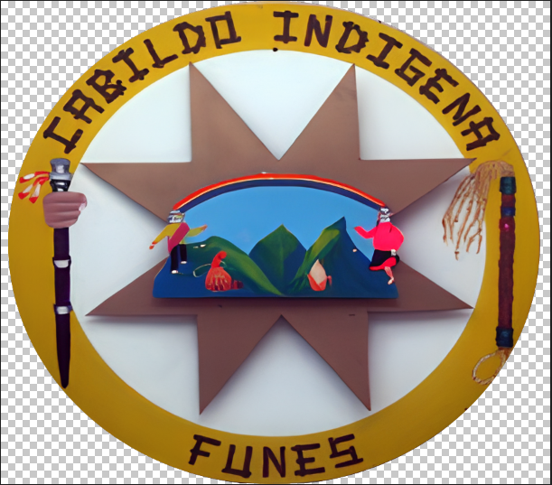

BIENVENIDOS A
PASTUKER
✦
Fortalecimiento de Identidad Cultural
Videojuego educativo para fortalecer el conocimiento ancestral del Pueblo Pasto, fortaleciendo la identidad cultural de los jóvenes indígenas de la Parcialidad de Chapal perteneciente al Resguardo indígena de Funes.
Taita Lorenzo
Sabedor Ancestral · Guía del Bosque
📶 Funciona 100% sin internet · Guarda tu progreso localmente